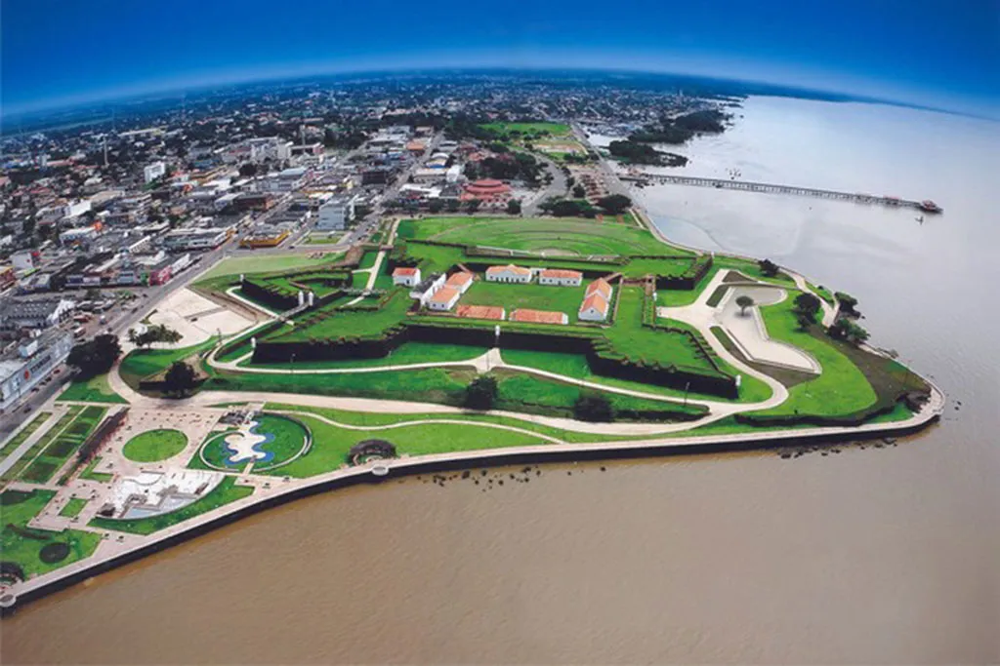

O Amapá é um estado da Região Norte do Brasil, situado na fronteira com a Guiana Francesa. Sua capital é Macapá, conhecida por estar localizada exatamente na linha do Equador. O estado é marcado pela grande presença da floresta amazônica e possui uma rica biodiversidade. A economia do Amapá é baseada na mineração, especialmente de manganês, além da agricultura, pesca e extrativismo. O estado também destaca-se por suas áreas de proteção ambiental e pela cultura indígena.

Voltar